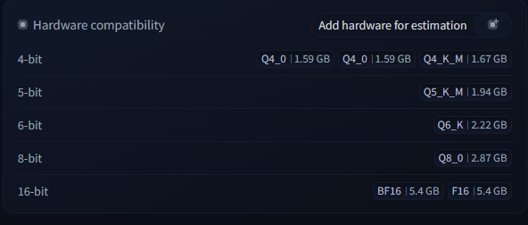

Quantização, GGUF e llama.cpp na prática
Use ← → para navegar
A revolução da IA começou com modelos gigantes — mas o foco atual para devs e uso local está na eficiência.
Um LLM gigante (o Professor, ex: GPT-4) gera milhões de respostas, raciocínios passo a passo e explicações perfeitas.
Um modelo bem menor (o Aluno) é treinado com esses dados para imitar a lógica e o estilo do professor.
O modelo pequeno herda a capacidade de raciocínio do gigante — sem precisar da mesma quantidade de parâmetros.
💡 É assim que surgem SLMs poderosos: qualidade de modelo grande, tamanho de modelo pequeno.
O maior gargalo para rodar localmente não é o processador — é a memória (RAM/VRAM).
🥧 Analogia: quantização é como arredondar o número π — 3,14159 ocupa mais memória que 3,1. Você perde precisão, mas na prática o resultado quase não muda.
Todas são técnicas de PTQ, mas com estratégias e objetivos diferentes:
llama.cppDentro do K-Quant existem diferentes configurações de compressão — quanto menos bits, menor o arquivo:

De Q4_0 (1,59 GB) até BF16/F16 (5,4 GB) sem quantização
Exemplo: Q4_K_M
| Símbolo | Significado |
|---|---|
| Q | Quantização |
| 4 | Número base (alvo) de bits utilizado |
| K | "K-quants": família de algoritmos de quantização mista/inteligente do GGUF |
| M | Perfil Medium — há também S (Small: economia extrema de RAM) e L (Large: mais bits, qualidade máxima) |
O motor por excelência para GGUF. Escrito em C++, extrai o máximo de CPUs e chips ARM (Apple M-series). Sem GPU potente? Esta é a ferramenta.
Focado em Safetensors (AWQ/GPTQ) e GPUs dedicadas. Usa PagedAttention para gerenciar VRAM. Ideal para servir dezenas de usuários (alto throughput).
Interface "estilo Docker" para IA local. Por baixo dos panos usa o llama.cpp. Roda um modelo com um simples ollama run llama3.
# https://llama.app/
irm https://llama.app/install.ps1 | iexllama serve -hf ggml-org/gemma-4-E2B-it-GGUF➜ Sobe uma API compatível com OpenAI em http://127.0.0.1:8080/v1
from langchain.chat_models import init_chat_model
provider = "openai" # template base da OpenAI
model = "ggml-org/gemma-4-E2B-it-GGUF" # nome do modelo
config = provider + ":" + model
params = {
"model": config,
"api_key": "",
"temperature": 0.3,
"max_tokens": 1500,
# "extra_body": {"repeat_penalty": 1.15, "min_p": 0.05},
"reasoning": {"effort": "low", "summary": "auto"},
"base_url": "http://127.0.0.1:8080/v1", # API endpoint
}
llm = init_chat_model(**params)
response = llm.invoke("escreva um poema")